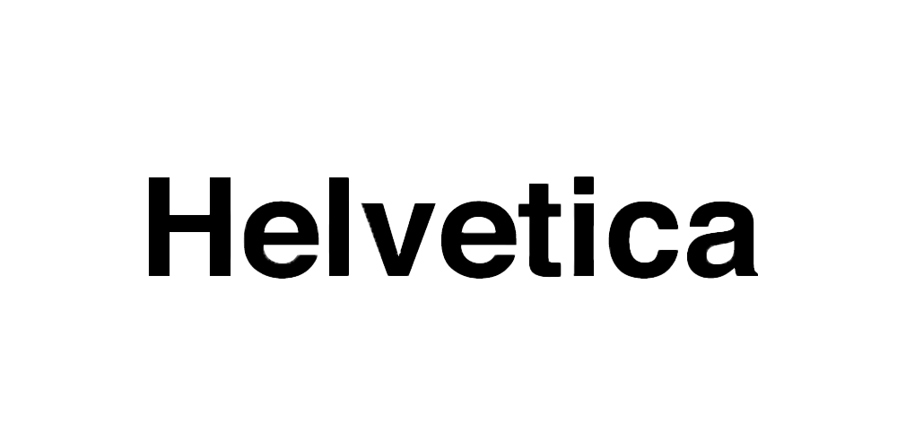

Home
Origins
Other Usage
Play a Song


Characteristics:
Helvetica is a typeface known for its minimalism, unique tight spacing, and a dense & bold appearance.
Helvetica has been used in branding from Jeep to Mattel. Helvetica has been a brand favorite since the 1960s which has grown since then with some exceptions.
Many people consider helvetica to be universal and legible, making it a suitable use in commercialization.
Critics of helvetica may complain that helvetica is too sterile and clean.
Grunge and Graphic Design
Helvetica is widely recognizable even when put through all sorts of effects which could be difficult to view through when used in certain contexts such as grunge.
In fact, many grunge graphic designers disliked the corporate and widespread use of Helvetica that they began to create their own typefaces.
My aim is to illustrate how helvetica can be used in an unconventional approach. Helvetica becomes distorted rather than being mainly clear and legible.